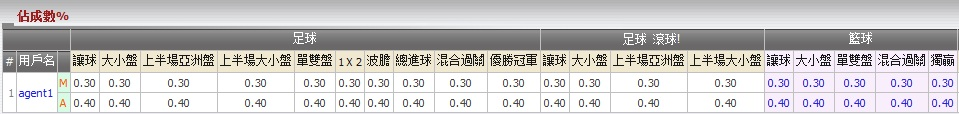
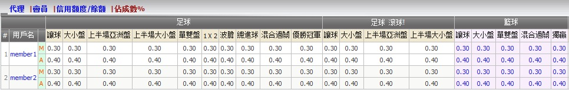
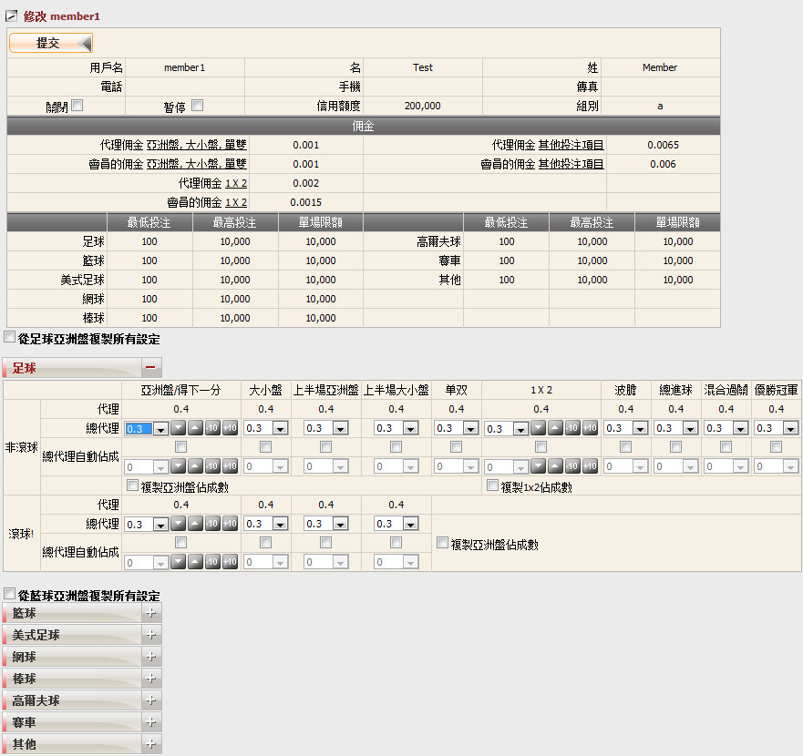

佔成數%
定義:
顯示總代理創建代理時取得的總代理原始佔成數, 和代理從會員處可得到的最高占城數。

圖 1.1
如果您要查看基於個別運動類型及投注類型, 總代理/代理從每個會員處取得的實際佔成數, 點擊代理用戶名 (圖1.2)。

圖 1.2
如何編輯佔成數:
點擊會員用戶名以修改佔成數。

圖 1.3
注:
- 總代理佔成 + 代理佔成 <= 上線設定的總代理最高佔成。
- 總代理佔成 + 代理佔成 >= 上線設定的總代理最低佔成。
- 總代理可以設置個別投注類型對於個別運動類型或使用足球/籃球的設置應用到其他運動類別, 投注類別。
- 對於非滾球投注:
-
從亞洲盤複製然後應用於大小盤, 上半場亞洲盤, 上半場大小盤, 單雙投注類別。
-
從1x2複製然後應用於波膽, 總進球, 混合過關, 優勝冠軍投注類別。
- 對於滾球投注: 從亞洲盤複製然後應用於大小盤, 上半場亞洲盤, 上半場大小盤, 單雙投注類別。